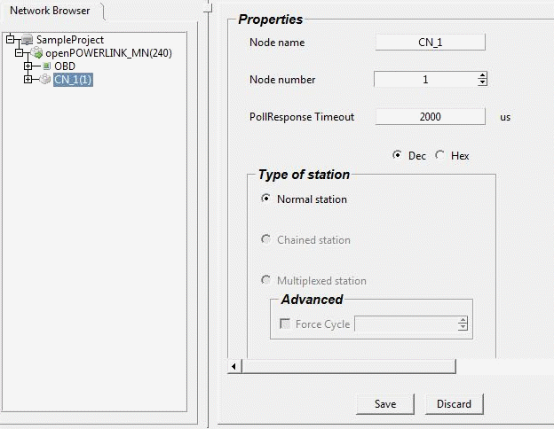

Editing MN Properties
The user can view and edit the following clicking a MN node from Network browser
Name of the managing node
Cycle time : value of the object 1006
Asynchronous MTU size : value of the Object 1F98 SubObject 08
Asynchronous Timeout : value of the object 1F8A SubObject 07
Multiplexing prescaler :value of the Object 1F98 SubObject 07. This value can be edited only if the MN supports multiplexing feature
The user can view and edit the following clicking a CN node from Network browser
Node Name
Node Number
Poll Response Timeout : value of Object 1006
The user also can can switch three stations
Normal Station
Chained station : This option is enabled only when both MN and the CN supports the Chaining feature.
Multiplex station : This option is enabled only when both MN and the CN supports the Multiplexing feature and the multiplex prescaler should be greater than zero.
